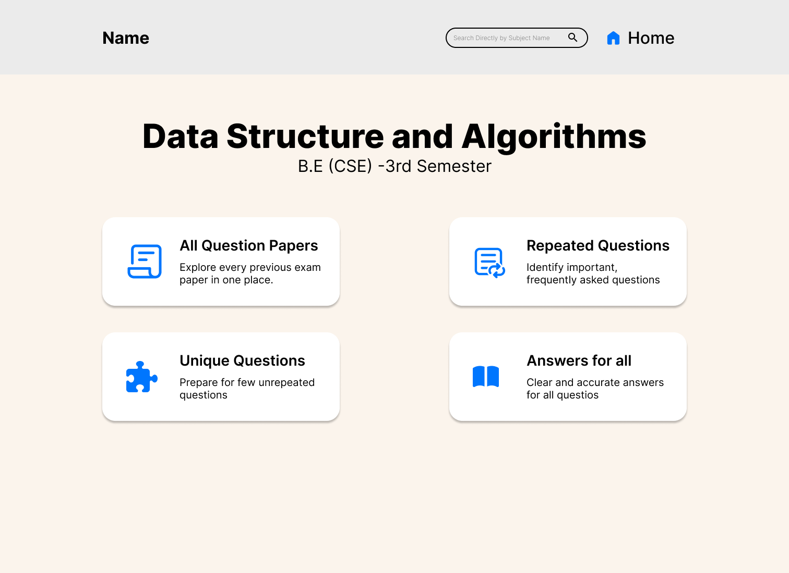
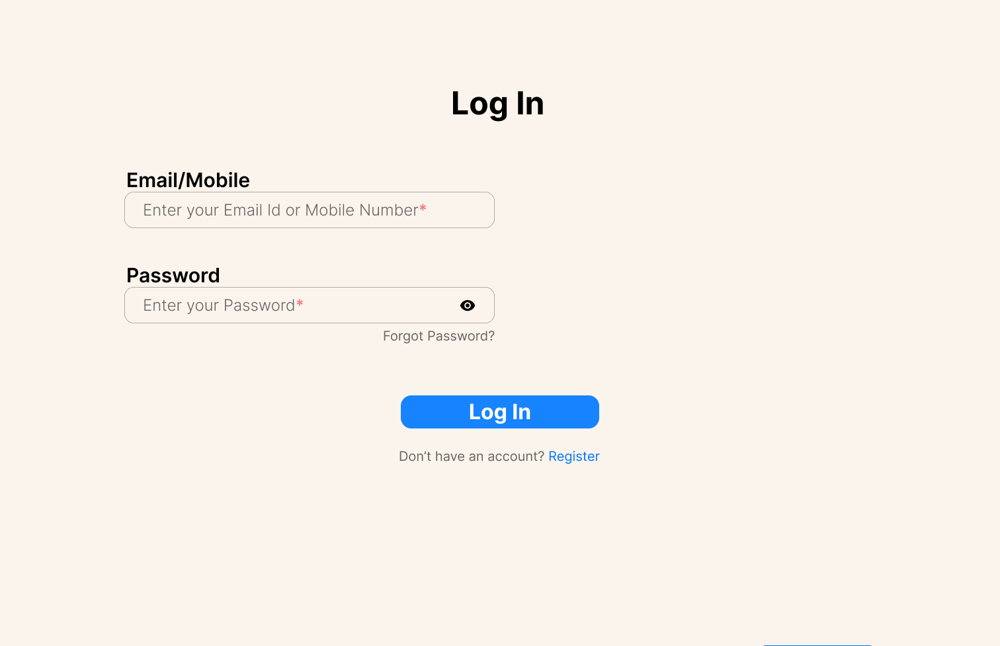
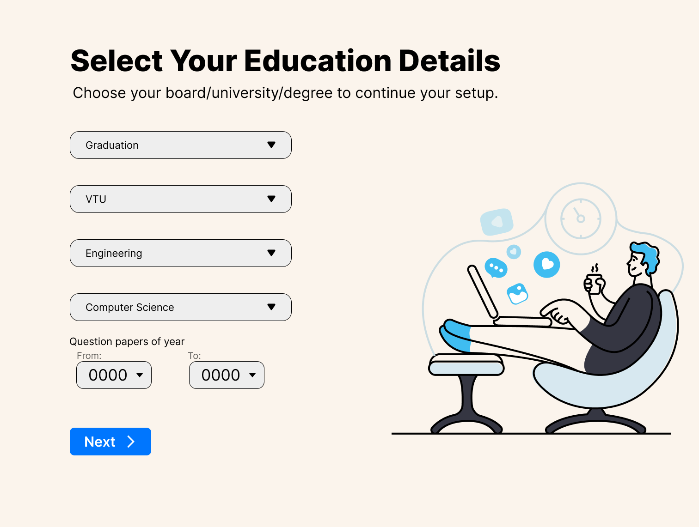
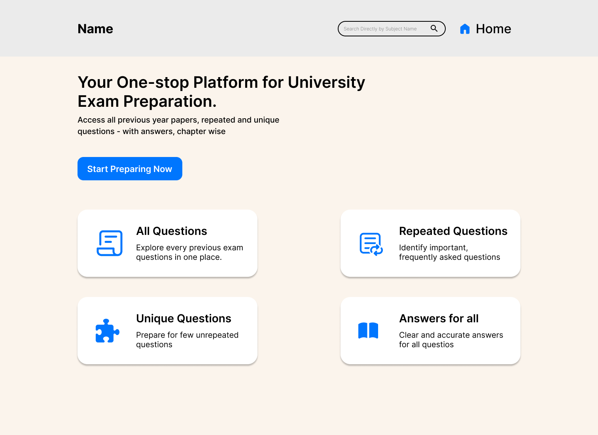
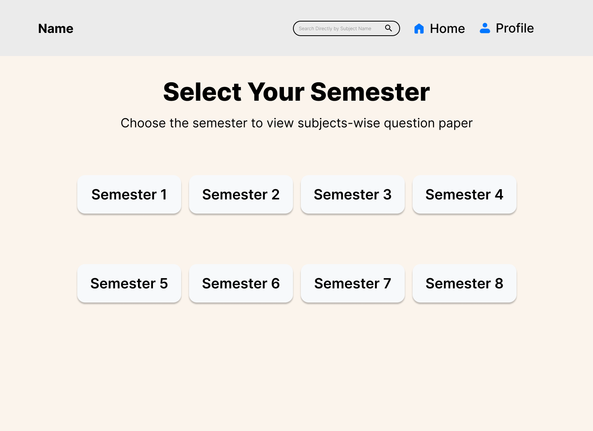
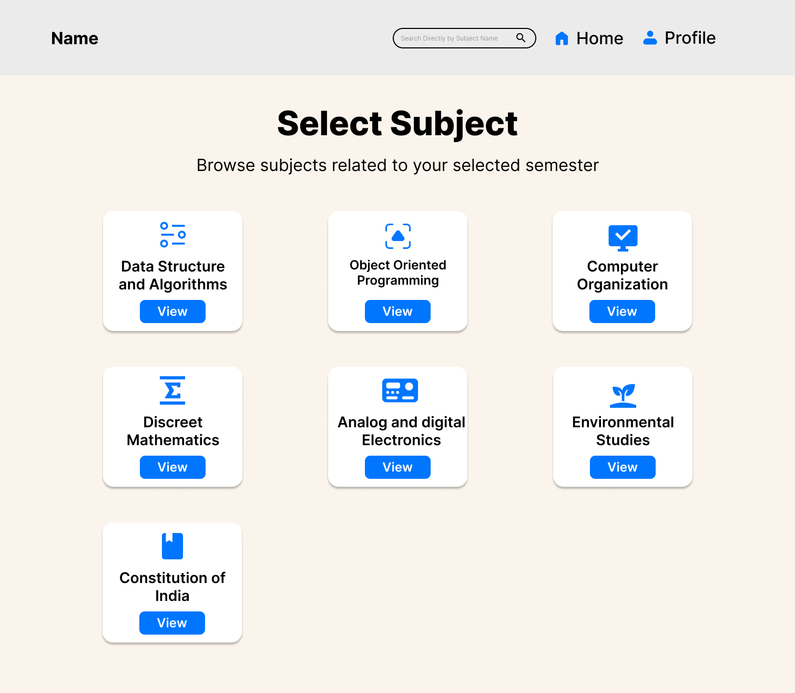
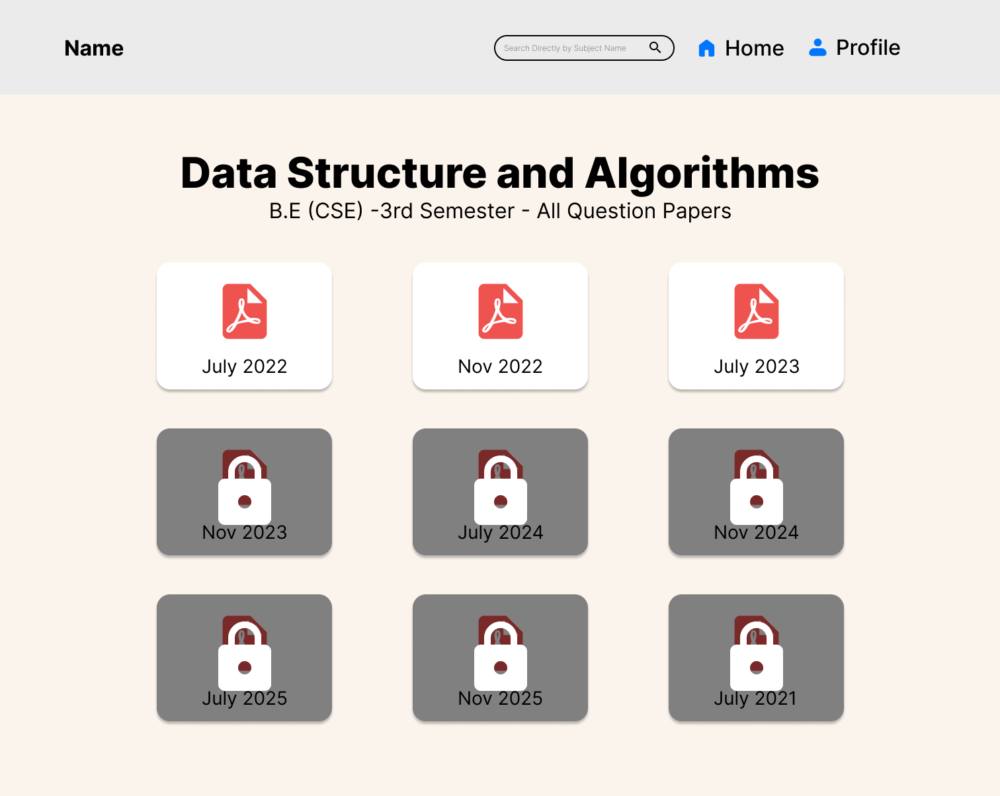

USER FLOW

The flow was intentionally kept flat to minimize navigation depth and reduce friction.

A Smarter Way to Analyze Previous Year Question Papers
During exam season, I observed that students spend more time searching for previous year question papers
than actually revising.
They often:
This inspired me to design a centralized solution that saves time and reduces exam stress.
Students lack a single organized platform to:
Goal: Reduce cognitive load during high-pressure exam time.
The flow was intentionally kept flat to minimize navigation depth and reduce friction.







QPrep is a web-based exam preparation platform that helps students save time by organizing and filtering previous year question papers intelligently, reducing manual effort during revision.